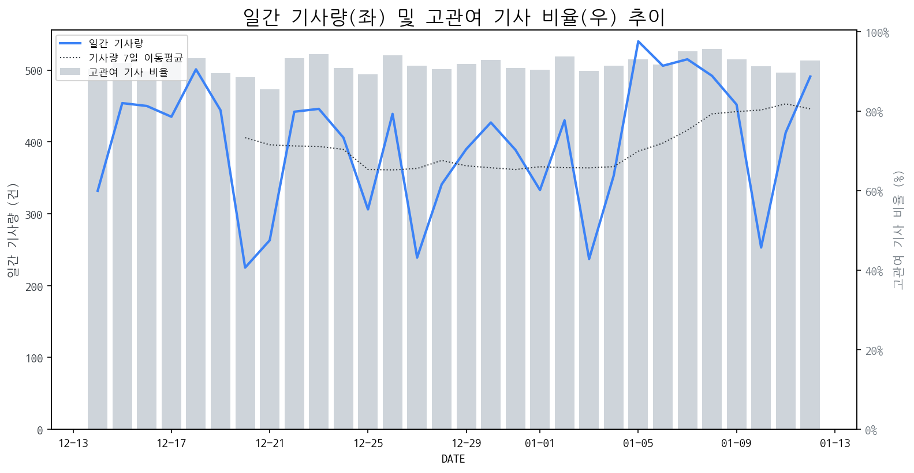

1
시장 활동 지표
기사량 추세 & 이상 징후 탐지
시장의 '전체 기사량'이 평소보다 비정상적으로 급증했는지(Spike)를 차트로 확인하고, LLM이 분석한 급등의 핵심 원인을 파악할 수 있음

고관여 기사란? 산업 연관 키워드로 수집된 기사들 중 디스플레이 키워드에 가중치를 반영하여 도출된 관련성 높은 기사
수집된 기사 수 (2026-01-12)
491
-9% WoW
기사량 변동 수준 (7일 이동평균 대비)
±6.7% 이하
2
오늘의 키워드
급격한 관심 ↑, 주목해야 할 키워드
1
갤럭시
+4.7σ
삼성전자 갤럭시 Z 트라이폴드가 CES 2026 최고 제품으로 선정되며 관련주가 폭등했습니다.
Related Metrics
금일 언급량: 19, 전일 대비: +17
Interpretation
폴더블 기술 선도, 부품 수요 증가
Next Step
'갤럭시' 관련 상세 기사 및 경쟁사 반응 모니터링
2
구글
+3.9σ
애플이 시리 AI 기능에 구글 제미나이를 채택하며 시가총액 4조 달러를 돌파한 영향이 큽니다.
Related Metrics
금일 언급량: 14, 전일 대비: +12
Interpretation
AI 칩 수요 증가 전망
Next Step
핵심 토픽 'Set_Manufacturer' 관련 신호입니다. 3번 섹션(키워드 감성분석)에서 해당 토픽의 감성 변동을 교차 확인하세요.
3
알파벳
+3.7σ
애플 시리 AI 기능에 구글 제미나이 채택 등 AI 협력 강화로 시총 4조 달러 돌파
Related Metrics
금일 언급량: 10, 전일 대비: +10
Interpretation
AI 시장 경쟁 심화
Next Step
'알파벳' 관련 상세 기사 및 경쟁사 반응 모니터링
4
lcd
+2.6σ
중국 LCD 추격에 대한 위기감 속 OLED 차별화 강조 및 CES 신기술 발표가 주요 요인입니다.
Related Metrics
금일 언급량: 8, 전일 대비: +8
Interpretation
OLED 경쟁력 강화 필요성 대두
Next Step
'lcd' 관련 상세 기사 및 경쟁사 반응 모니터링
3
실시간 Risk 키워드
경계해야 할 시그널 탐지
특정 토픽의 부정 감성 점수가 급등할 때 이를 즉시 탐지하고, "근거 기사" 링크를 통해 리스크의 실체를 빠르게 파악할 수 있음
키워드 분석 결과, 오늘은 걱정할 만한 하락 신호가 없습니다. (부정 언급량 변화: +1.5σ 이내)
4
주요 이벤트 모니터링
실시간 산업 동향 파악을 위한 주요 활동
최근 발생한 주요 기업들의 신제품 출시, 투자 등 주요 이벤트를 제공하여 매일 경쟁사 동향을 확인할 수 있음
반도체 장비 관련주인 에이치엠넥스, 러셀, 그린광학, 에이팩 등이 상승세를 보였다. 이는 반도체 장비 시장의 활황을 나타내며, 관련 기술 및 기업들이 주목받고 있음을 의미한다.
Impact
반도체 장비 기술의 발전 및 공유는 디스플레이 제조 공정의 혁신과 효율성 증대에 기여할 수 있으며, 새로운 장비 도입 및 기술 협력 기회를 창출할 가능성이 있다.
Next Step
디스플레이 제조 기업은 반도체 장비 시장의 동향을 면밀히 주시하고, 잠재적 협력 가능성이 있는 기업과의 기술 교류 및 파트너십 구축을 검토해야 한다.
MSI는 새로운 PRO MAX 시리즈를 출시하며, 특히 화이트 색상의 감성을 강조했습니다. 이 시리즈는 기존 PRO 라인업의 확장으로 사용자들에게 새로운 선택지를 제공합니다.
Impact
MSI의 화이트 감성 PRO MAX 시리즈 출시는 소비자 취향 다변화에 따른 시장 세분화 전략의 성공 가능성을 보여주며, 다른 디스플레이 제조사들에게도 특정 디자인 컨셉을 강화한 제품 라인업 확대의 기회를 시사합니다.
Next Step
타사 디스플레이 제조 기업들은 자사 제품의 디자인 차별화 전략을 재검토하고, 특정 타겟 소비층을 겨냥한 맞춤형 디자인 라인업 구축을 고려해야 합니다.
LG전자가 어닝 쇼크 수준의 실적 부진을 기록하며, 이는 한국 TV 시장 전반의 위기론을 촉발하고 있다. 주요 원인으로는 글로벌 경기 침체와 고물가로 인한 소비 심리 위축이 지목된다.
Impact
LG전자 실적 부진은 국내 디스플레이 패널 제조사들의 수요 감소 및 가격 하락 압력으로 이어져 시장 전반의 수익성에 부정적인 영향을 미칠 수 있다.
Next Step
고부가가치 프리미엄 제품 라인업 강화 및 신흥 시장 공략 다변화를 통해 시장 변동성에 대한 대응력을 높여야 한다.
삼성전자와 LG전자는 새로운 디스플레이 기술이 적용된 제품을 선보이며 시장 경쟁력을 강화하고 있으며, 샤오미코리아, 로보락, 드리미 등은 스마트홈 및 로봇 제품군을 확장하며 생태계 구축에 집중하고 있습니다.
Impact
다양한 IT 기업들의 신제품 출시와 사업 확장은 디스플레이 기술의 발전과 적용 범위를 넓히는 동시에, 관련 부품 시장의 경쟁 심화를 야기할 수 있습니다.
Next Step
디스플레이 제조 기업은 차별화된 기술력과 혁신적인 디자인을 바탕으로 경쟁 우위를 확보하고, 신규 적용 시장 발굴에 적극적으로 나서야 합니다.
아나패스가 온디바이스 AI 시대 개화에 맞춰 사업 전략을 구체화하며 한국판 미디어텍을 지향하고 있다. 이는 AI 기술이 디바이스 자체에서 구현되는 트렌드에 발맞춰 새로운 성장 동력을 확보하겠다는 의지로 해석된다.
Impact
아나패스의 온디바이스 AI 시장 진출은 디스플레이 패널 제조사들에게 고성능 AI 기능을 통합한 디스플레이 제품 개발 및 차별화 전략 수립의 필요성을 증대시킬 수 있다.
Next Step
디스플레이 제조 기업은 아나패스와 같은 팹리스 기업과의 협력을 통해 온디바이스 AI 칩셋과의 최적화된 디스플레이 솔루션을 공동 개발하거나, 자체 AI 기술 내재화를 검토해야 한다.